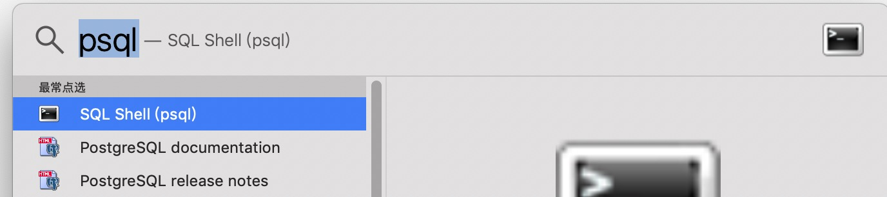

Sintaxis de PostgreSQL
De forma predeterminada, después de completar la instalación de PostgreSQL, viene con una herramienta de línea de comandos.SQL Shell(psql)。
LinuxEl sistema puede cambiar directamente al usuario postgres para abrir la herramienta de línea de comandos:
# sudo -i -u postgres
WindowsEl sistema generalmente está en su directorio de instalación:
Program Files → PostgreSQL 11.3 → SQL Shell(psql)
Mac OSPodemos encontrarlo con una búsqueda directa:

Al ingresar a la herramienta de línea de comandos, podemos usar\helppara ver la sintaxis de los distintos comandos:
postgres-# \help <command_name>
Por ejemplo, veamos la sintaxis de la sentencia select:
postgres=# \help SELECT
Command: SELECT
Description: retrieve rows from a table or view
Syntax:
[ WITH [ RECURSIVE ] with_query [, ...] ]
SELECT [ ALL | DISTINCT [ ON ( expression [, ...] ) ] ]
[ * | expression [ [ AS ] output_name ] [, ...] ]
[ FROM from_item [, ...] ]
[ WHERE condition ]
[ GROUP BY grouping_element [, ...] ]
[ HAVING condition [, ...] ]
[ WINDOW window_name AS ( window_definition ) [, ...] ]
[ { UNION | INTERSECT | EXCEPT } [ ALL | DISTINCT ] select ]
[ ORDER BY expression [ ASC | DESC | USING operator ] [ NULLS { FIRST | LAST } ] [, ...] ]
[ LIMIT { count | ALL } ]
[ OFFSET start [ ROW | ROWS ] ]
[ FETCH { FIRST | NEXT } [ count ] { ROW | ROWS } ONLY ]
[ FOR { UPDATE | NO KEY UPDATE | SHARE | KEY SHARE } [ OF table_name [, ...] ] [ NOWAIT | SKIP LOCKED ] [...] ]
from_item 可以是以下选项之一：
[ ONLY ] table_name [ * ] [ [ AS ] alias [ ( column_alias [, ...] ) ] ]
Sentencias SQL
Una sentencia SQL generalmente contiene palabras clave, identificadores (campos), constantes, símbolos especiales, etc. A continuación se muestra una sentencia SQL simple:
SELECT id, name FROM runoob
| SELECT | id, name | FROM | runoob | |
|---|---|---|---|---|
| Tipos de símbolos | Palabra clave | Identificador (campo) | Palabra clave | Identificador |
| Descripción | Comando | Los campos id y name | Sentencia, utilizada para establecer reglas de condición, etc. | Nombre de la tabla |
Comandos de PostgreSQL
ABORT
ABORT se utiliza para salir de la transacción actual.
ABORT [ WORK | TRANSACTION ]
ALTER AGGREGATE
Modificar la definición de una función de agregación.
ALTER AGGREGATE _name_ ( _argtype_ [ , ... ] ) RENAME TO _new_name_ ALTER AGGREGATE _name_ ( _argtype_ [ , ... ] ) OWNER TO _new_owner_ ALTER AGGREGATE _name_ ( _argtype_ [ , ... ] ) SET SCHEMA _new_schema_
ALTER COLLATION
Modificar la definición de una regla de ordenación.
ALTER COLLATION _name_ RENAME TO _new_name_ ALTER COLLATION _name_ OWNER TO _new_owner_ ALTER COLLATION _name_ SET SCHEMA _new_schema_
ALTER CONVERSION
Modificar la definición de una conversión de codificación.
ALTER CONVERSION name RENAME TO new_name ALTER CONVERSION name OWNER TO new_owner
ALTER DATABASE
Modificar una base de datos.
ALTER DATABASE name SET parameter { TO | = } { value | DEFAULT }
ALTER DATABASE name RESET parameter
ALTER DATABASE name RENAME TO new_name
ALTER DATABASE name OWNER TO new_owner
ALTER DEFAULT PRIVILEGES
Definir los permisos de acceso predeterminados.
ALTER DEFAULT PRIVILEGES
[ FOR { ROLE | USER } target_role [, ...] ]
[ IN SCHEMA schema_name [, ...] ]
abbreviated_grant_or_revoke
where abbreviated_grant_or_revoke is one of:
GRANT { { SELECT | INSERT | UPDATE | DELETE | TRUNCATE | REFERENCES | TRIGGER }
[, ...] | ALL [ PRIVILEGES ] }
ON TABLES
TO { [ GROUP ] role_name | PUBLIC } [, ...] [ WITH GRANT OPTION ]
...
ALTER DOMAIN
Modificar la definición de un dominio.
ALTER DOMAIN name { SET DEFAULT expression | DROP DEFAULT }
ALTER DOMAIN name { SET | DROP } NOT NULL
ALTER DOMAIN name ADD domain_constraint
ALTER DOMAIN name DROP CONSTRAINT constraint_name [ RESTRICT | CASCADE ]
ALTER DOMAIN name OWNER TO new_owner
ALTER FUNCTION
Modificar la definición de una función.
ALTER FUNCTION name ( [ type [, ...] ] ) RENAME TO new_name ALTER FUNCTION name ( [ type [, ...] ] ) OWNER TO new_owner
ALTER GROUP
Modificar un grupo de usuarios.
ALTER GROUP groupname ADD USER username [, ... ] ALTER GROUP groupname DROP USER username [, ... ] ALTER GROUP groupname RENAME TO new_name
ALTER INDEX
Modificar la definición de un índice.
ALTER INDEX name OWNER TO new_owner ALTER INDEX name SET TABLESPACE indexspace_name ALTER INDEX name RENAME TO new_name
ALTER LANGUAGE
Modificar la definición de un lenguaje de procedimiento.
ALTER LANGUAGE name RENAME TO new_name
ALTER OPERATOR
Cambiar la definición de un operador.
ALTER OPERATOR name ( { lefttype | NONE }, { righttype | NONE } )
OWNER TO new_owner
ALTER OPERATOR CLASS
Modificar la definición de una tabla de operadores.
ALTER OPERATOR CLASS name USING index_method RENAME TO new_name ALTER OPERATOR CLASS name USING index_method OWNER TO new_owner
ALTER SCHEMA
Modificar la definición de un esquema.
ALTER SCHEMA name RENAME TO new_name ALTER SCHEMA name OWNER TO new_owner
ALTER SEQUENCE
Modificar la definición de un generador de secuencias.
ALTER SEQUENCE name [ INCREMENT [ BY ] increment ] [ MINVALUE minvalue | NO MINVALUE ] [ MAXVALUE maxvalue | NO MAXVALUE ] [ RESTART [ WITH ] start ] [ CACHE cache ] [ [ NO ] CYCLE ]
ALTER TABLE
Modificar la definición de una tabla.
ALTER TABLE [ ONLY ] name [ * ] action [, ... ] ALTER TABLE [ ONLY ] name [ * ] RENAME [ COLUMN ] column TO new_column ALTER TABLE name RENAME TO new_name
Dondeactionpuede ser una de las opciones:
ADD [ COLUMN ] column_type [ column_constraint [ ... ] ]
DROP [ COLUMN ] column [ RESTRICT | CASCADE ]
ALTER [ COLUMN ] column TYPE type [ USING expression ]
ALTER [ COLUMN ] column SET DEFAULT expression
ALTER [ COLUMN ] column DROP DEFAULT
ALTER [ COLUMN ] column { SET | DROP } NOT NULL
ALTER [ COLUMN ] column SET STATISTICS integer
ALTER [ COLUMN ] column SET STORAGE { PLAIN | EXTERNAL | EXTENDED | MAIN }
ADD table_constraint
DROP CONSTRAINT constraint_name [ RESTRICT | CASCADE ]
CLUSTER ON index_name
SET WITHOUT CLUSTER
SET WITHOUT OIDS
OWNER TO new_owner
SET TABLESPACE tablespace_name
ALTER TABLESPACE
Modificar la definición de un tablespace.
ALTER TABLESPACE name RENAME TO new_name ALTER TABLESPACE name OWNER TO new_owner
ALTER TRIGGER
Modificar la definición de un disparador.
ALTER TRIGGER name ON table RENAME TO new_name
ALTER TYPE
Modificar la definición de un tipo.
ALTER TYPE name OWNER TO new_owner
ALTER USER
Modificar la cuenta de usuario de la base de datos.
ALTER USER name [ [ WITH ] option [ ... ] ]
ALTER USER name RENAME TO new_name
ALTER USER name SET parameter { TO | = } { value | DEFAULT }
ALTER USER name RESET parameter
Where option can be −
[ ENCRYPTED | UNENCRYPTED ] PASSWORD 'password' | CREATEDB | NOCREATEDB | CREATEUSER | NOCREATEUSER | VALID UNTIL 'abstime'
ANALYZE
Recopilar estadísticas relacionadas con la base de datos.
ANALYZE [ VERBOSE ] [ table [ (column [, ...] ) ] ]
BEGIN
Iniciar un bloque de transacción.
BEGIN [ WORK | TRANSACTION ] [ transaction_mode [, ...] ]
transaction_modePuede ser una de las siguientes opciones:
ISOLATION LEVEL {
SERIALIZABLE | REPEATABLE READ | READ COMMITTED
| READ UNCOMMITTED
}
READ WRITE | READ ONLY
CHECKPOINT
Forzar un punto de control del registro de transacciones.
CHECKPOINT
CLOSE
Cerrar el cursor.
CLOSE name
CLUSTER
Agrupar (cluster) una tabla según un índice.
CLUSTER index_name ON table_name CLUSTER table_name CLUSTER
COMMENT
Definir o cambiar el comentario de un objeto.
COMMENT ON {
TABLE object_name |
COLUMN table_name.column_name |
AGGREGATE agg_name (agg_type) |
CAST (source_type AS target_type) |
CONSTRAINT constraint_name ON table_name |
CONVERSION object_name |
DATABASE object_name |
DOMAIN object_name |
FUNCTION func_name (arg1_type, arg2_type, ...) |
INDEX object_name |
LARGE OBJECT large_object_oid |
OPERATOR op (left_operand_type, right_operand_type) |
OPERATOR CLASS object_name USING index_method |
[ PROCEDURAL ] LANGUAGE object_name |
RULE rule_name ON table_name |
SCHEMA object_name |
SEQUENCE object_name |
TRIGGER trigger_name ON table_name |
TYPE object_name |
VIEW object_name
}
IS 'text'
COMMIT
Confirmar la transacción actual.
COMMIT [ WORK | TRANSACTION ]
COPY
Copiar datos entre una tabla y un archivo.
COPY table_name [ ( column [, ...] ) ]
FROM { 'filename' | STDIN }
[ WITH ]
[ BINARY ]
[ OIDS ]
[ DELIMITER [ AS ] 'delimiter' ]
[ NULL [ AS ] 'null string' ]
[ CSV [ QUOTE [ AS ] 'quote' ]
[ ESCAPE [ AS ] 'escape' ]
[ FORCE NOT NULL column [, ...] ]
COPY table_name [ ( column [, ...] ) ]
TO { 'filename' | STDOUT }
[ [ WITH ]
[ BINARY ]
[ OIDS ]
[ DELIMITER [ AS ] 'delimiter' ]
[ NULL [ AS ] 'null string' ]
[ CSV [ QUOTE [ AS ] 'quote' ]
[ ESCAPE [ AS ] 'escape' ]
[ FORCE QUOTE column [, ...] ]
CREATE AGGREGATE
Definir una nueva función de agregación.
CREATE AGGREGATE name ( BASETYPE = input_data_type, SFUNC = sfunc, STYPE = state_data_type [, FINALFUNC = ffunc ] [, INITCOND = initial_condition ] )
CREATE CAST
Definir una conversión definida por el usuario.
CREATE CAST (source_type AS target_type) WITH FUNCTION func_name (arg_types) [ AS ASSIGNMENT | AS IMPLICIT ] CREATE CAST (source_type AS target_type) WITHOUT FUNCTION [ AS ASSIGNMENT | AS IMPLICIT ]
CREATE CONSTRAINT TRIGGER
Definir un nuevo disparador de restricción.
CREATE CONSTRAINT TRIGGER name AFTER events ON table_name constraint attributes FOR EACH ROW EXECUTE PROCEDURE func_name ( args )
CREATE CONVERSION
Definir una nueva conversión de codificación.
CREATE [DEFAULT] CONVERSION name FOR source_encoding TO dest_encoding FROM func_name
CREATE DATABASE
Crear una nueva base de datos.
CREATE DATABASE name [ [ WITH ] [ OWNER [=] db_owner ] [ TEMPLATE [=] template ] [ ENCODING [=] encoding ] [ TABLESPACE [=] tablespace ] ]
CREATE DOMAIN
Definir un nuevo dominio.
CREATE DOMAIN name [AS] data_type [ DEFAULT expression ] [ constraint [ ... ] ]
constraintPuede ser una de las siguientes opciones:
[ CONSTRAINT constraint_name ]
{ NOT NULL | NULL | CHECK (expression) }
CREATE FUNCTION
Definir una nueva función.
CREATE [ OR REPLACE ] FUNCTION name ( [ [ arg_name ] arg_type [, ...] ] )
RETURNS ret_type
{ LANGUAGE lang_name
| IMMUTABLE | STABLE | VOLATILE
| CALLED ON NULL INPUT | RETURNS NULL ON NULL INPUT | STRICT
| [ EXTERNAL ] SECURITY INVOKER | [ EXTERNAL ] SECURITY DEFINER
| AS 'definition'
| AS 'obj_file', 'link_symbol'
} ...
[ WITH ( attribute [, ...] ) ]
CREATE GROUP
Definir un nuevo grupo de usuarios.
CREATE GROUP name [ [ WITH ] option [ ... ] ] Where option can be: SYSID gid | USER username [, ...]
CREATE INDEX
Definir un nuevo índice.
CREATE [ UNIQUE ] INDEX name ON table [ USING method ]
( { column | ( expression ) } [ opclass ] [, ...] )
[ TABLESPACE tablespace ]
[ WHERE predicate ]
CREATE LANGUAGE
Definir un nuevo lenguaje de procedimiento.
CREATE [ TRUSTED ] [ PROCEDURAL ] LANGUAGE name HANDLER call_handler [ VALIDATOR val_function ]
CREATE OPERATOR
Definir un nuevo operador.
CREATE OPERATOR name ( PROCEDURE = func_name [, LEFTARG = left_type ] [, RIGHTARG = right_type ] [, COMMUTATOR = com_op ] [, NEGATOR = neg_op ] [, RESTRICT = res_proc ] [, JOIN = join_proc ] [, HASHES ] [, MERGES ] [, SORT1 = left_sort_op ] [, SORT2 = right_sort_op ] [, LTCMP = less_than_op ] [, GTCMP = greater_than_op ] )
CREATE OPERATOR CLASS
Definir una nueva tabla de operadores.
CREATE OPERATOR CLASS name [ DEFAULT ] FOR TYPE data_type
USING index_method AS
{ OPERATOR strategy_number operator_name [ ( op_type, op_type ) ] [ RECHECK ]
| FUNCTION support_number func_name ( argument_type [, ...] )
| STORAGE storage_type
} [, ... ]
CREATE ROLE
Definir un nuevo rol de base de datos.
CREATE ROLE _name_ [ [ WITH ] _option_ [ ... ] ]
where `_option_` can be:
SUPERUSER | NOSUPERUSER
| CREATEDB | NOCREATEDB
| CREATEROLE | NOCREATEROLE
...
CREATE RULE
Definir una nueva regla de reescritura.
CREATE [ OR REPLACE ] RULE name AS ON event
TO table [ WHERE condition ]
DO [ ALSO | INSTEAD ] { NOTHING | command | ( command ; command ... ) }
CREATE SCHEMA
Definir un nuevo esquema.
CREATE SCHEMA schema_name [ AUTHORIZATION username ] [ schema_element [ ... ] ] CREATE SCHEMA AUTHORIZATION username [ schema_element [ ... ] ]
CREATE SERVER
Definir un nuevo servidor externo.
CREATE SERVER _server_name_ [ TYPE '_server_type_' ] [ VERSION '_server_version_' ]
FOREIGN DATA WRAPPER _fdw_name_
[ OPTIONS ( _option_ '_value_' [, ... ] ) ]
CREATE SEQUENCE
Definir un nuevo generador de secuencias.
CREATE [ TEMPORARY | TEMP ] SEQUENCE name [ INCREMENT [ BY ] increment ] [ MINVALUE minvalue | NO MINVALUE ] [ MAXVALUE maxvalue | NO MAXVALUE ] [ START [ WITH ] start ] [ CACHE cache ] [ [ NO ] CYCLE ]
CREATE TABLE
Definir una nueva tabla.
CREATE [ [ GLOBAL | LOCAL ] {
TEMPORARY | TEMP } ] TABLE table_name ( {
column_name data_type [ DEFAULT default_expr ] [ column_constraint [ ... ] ]
| table_constraint
| LIKE parent_table [ { INCLUDING | EXCLUDING } DEFAULTS ]
} [, ... ]
)
[ INHERITS ( parent_table [, ... ] ) ]
[ WITH OIDS | WITHOUT OIDS ]
[ ON COMMIT { PRESERVE ROWS | DELETE ROWS | DROP } ]
[ TABLESPACE tablespace ]
column_constraintPuede ser una de las siguientes opciones:
[ CONSTRAINT constraint_name ] {
NOT NULL |
NULL |
UNIQUE [ USING INDEX TABLESPACE tablespace ] |
PRIMARY KEY [ USING INDEX TABLESPACE tablespace ] |
CHECK (expression) |
REFERENCES ref_table [ ( ref_column ) ]
[ MATCH FULL | MATCH PARTIAL | MATCH SIMPLE ]
[ ON DELETE action ] [ ON UPDATE action ]
}
[ DEFERRABLE | NOT DEFERRABLE ] [ INITIALLY DEFERRED | INITIALLY IMMEDIATE ]
table_constraintPuede ser una de las siguientes opciones:
[ CONSTRAINT constraint_name ]
{ UNIQUE ( column_name [, ... ] ) [ USING INDEX TABLESPACE tablespace ] |
PRIMARY KEY ( column_name [, ... ] ) [ USING INDEX TABLESPACE tablespace ] |
CHECK ( expression ) |
FOREIGN KEY ( column_name [, ... ] )
REFERENCES ref_table [ ( ref_column [, ... ] ) ]
[ MATCH FULL | MATCH PARTIAL | MATCH SIMPLE ]
[ ON DELETE action ] [ ON UPDATE action ] }
[ DEFERRABLE | NOT DEFERRABLE ] [ INITIALLY DEFERRED | INITIALLY IMMEDIATE ]
CREATE TABLE AS
Definir una nueva tabla a partir del resultado de una consulta.
CREATE [ [ GLOBAL | LOCAL ] { TEMPORARY | TEMP } ] TABLE table_name
[ (column_name [, ...] ) ] [ [ WITH | WITHOUT ] OIDS ]
AS query
CREATE TABLESPACE
Definir un nuevo tablespace.
CREATE TABLESPACE tablespace_name [ OWNER username ] LOCATION 'directory'
CREATE TRIGGER
Definir un nuevo disparador.
CREATE TRIGGER name { BEFORE | AFTER } { event [ OR ... ] }
ON table [ FOR [ EACH ] { ROW | STATEMENT } ]
EXECUTE PROCEDURE func_name ( arguments )
CREATE TYPE
Definir un nuevo tipo de datos.
CREATE TYPE name AS
( attribute_name data_type [, ... ] )
CREATE TYPE name (
INPUT = input_function,
OUTPUT = output_function
[, RECEIVE = receive_function ]
[, SEND = send_function ]
[, ANALYZE = analyze_function ]
[, INTERNALLENGTH = { internal_length | VARIABLE } ]
[, PASSEDBYVALUE ]
[, ALIGNMENT = alignment ]
[, STORAGE = storage ]
[, DEFAULT = default ]
[, ELEMENT = element ]
[, DELIMITER = delimiter ]
)
CREATE USER
Crear una nueva cuenta de usuario de base de datos.
CREATE USER name [ [ WITH ] option [ ... ] ]
optionPuede ser una de las siguientes opciones:
SYSID uid | [ ENCRYPTED | UNENCRYPTED ] PASSWORD 'password' | CREATEDB | NOCREATEDB | CREATEUSER | NOCREATEUSER | IN GROUP group_name [, ...] | VALID UNTIL 'abs_time'
CREATE VIEW
Definir una vista.
CREATE [ OR REPLACE ] VIEW name [ ( column_name [, ...] ) ] AS query
DEALLOCATE
Eliminar una consulta preparada.
DEALLOCATE [ PREPARE ] plan_name
DECLARE
Definir un cursor.
DECLARE name [ BINARY ] [ INSENSITIVE ] [ [ NO ] SCROLL ]
CURSOR [ { WITH | WITHOUT } HOLD ] FOR query
[ FOR { READ ONLY | UPDATE [ OF column [, ...] ] } ]
DELETE
Eliminar filas de una tabla.
DELETE FROM [ ONLY ] table [ WHERE condition ]
DROP AGGREGATE
Eliminar una función de agregación definida por el usuario.
DROP AGGREGATE name ( type ) [ CASCADE | RESTRICT ]
DROP CAST
Eliminar una conversión de tipo definida por el usuario.
DROP CAST (source_type AS target_type) [ CASCADE | RESTRICT ]
DROP CONVERSION
Eliminar una conversión de codificación definida por el usuario.
DROP CONVERSION name [ CASCADE | RESTRICT ]
DROP DATABASE
Eliminar una base de datos.
DROP DATABASE name
DROP DOMAIN
Eliminar un dominio definido por el usuario.
DROP DOMAIN name [, ...] [ CASCADE | RESTRICT ]
DROP FUNCTION
Eliminar una función.
DROP FUNCTION name ( [ type [, ...] ] ) [ CASCADE | RESTRICT ]
DROP GROUP
Eliminar un grupo de usuarios.
DROP GROUP name
DROP INDEX
Eliminar un índice.
DROP INDEX name [, ...] [ CASCADE | RESTRICT ]
DROP LANGUAGE
Eliminar un lenguaje de procedimiento.
DROP [ PROCEDURAL ] LANGUAGE name [ CASCADE | RESTRICT ]
DROP OPERATOR
Eliminar un operador.
DROP OPERATOR name ( { left_type | NONE }, { right_type | NONE } )
[ CASCADE | RESTRICT ]
DROP OPERATOR CLASS
Eliminar una tabla de operadores.
DROP OPERATOR CLASS name USING index_method [ CASCADE | RESTRICT ]
DROP ROLE
Eliminar un rol de base de datos.
DROP ROLE [ IF EXISTS ] _name_ [, ...]
DROP RULE
Eliminar una regla de reescritura.
DROP RULE name ON relation [ CASCADE | RESTRICT ]
DROP SCHEMA
Eliminar un esquema.
DROP SCHEMA name [, ...] [ CASCADE | RESTRICT ]
DROP SEQUENCE
Eliminar una secuencia.
DROP SEQUENCE name [, ...] [ CASCADE | RESTRICT ]
DROP TABLE
Eliminar una tabla.
DROP TABLE name [, ...] [ CASCADE | RESTRICT ]
DROP TABLESPACE
Eliminar un tablespace.
DROP TABLESPACE tablespace_name
DROP TRIGGER
Eliminar la definición de un disparador.
DROP TRIGGER name ON table [ CASCADE | RESTRICT ]
DROP TYPE
Eliminar un tipo de datos definido por el usuario.
DROP TYPE name [, ...] [ CASCADE | RESTRICT ]
DROP USER
Eliminar una cuenta de usuario de base de datos.
DROP USER name
DROP VIEW
Eliminar una vista.
DROP VIEW name [, ...] [ CASCADE | RESTRICT ]
END
Confirmar la transacción actual.
END [ WORK | TRANSACTION ]
EXECUTE
Ejecutar una consulta preparada.
EXECUTE plan_name [ (parameter [, ...] ) ]
EXPLAIN
Mostrar el plan de ejecución de una sentencia.
EXPLAIN [ ANALYZE ] [ VERBOSE ] statement
FETCH
Obtener filas de una consulta usando un cursor.
FETCH [ direction { FROM | IN } ] cursor_name
directionPuede ser una de las siguientes opciones:
NEXT PRIOR FIRST LAST ABSOLUTE count RELATIVE count count ALL FORWARD FORWARD count FORWARD ALL BACKWARD BACKWARD count BACKWARD ALL
GRANT
Definir los permisos de acceso.
GRANT { { SELECT | INSERT | UPDATE | DELETE | RULE | REFERENCES | TRIGGER }
[,...] | ALL [ PRIVILEGES ] }
ON [ TABLE ] table_name [, ...]
TO { username | GROUP group_name | PUBLIC } [, ...] [ WITH GRANT OPTION ]
GRANT { { CREATE | TEMPORARY | TEMP } [,...] | ALL [ PRIVILEGES ] }
ON DATABASE db_name [, ...]
TO { username | GROUP group_name | PUBLIC } [, ...] [ WITH GRANT OPTION ]
GRANT { CREATE | ALL [ PRIVILEGES ] }
ON TABLESPACE tablespace_name [, ...]
TO { username | GROUP group_name | PUBLIC } [, ...] [ WITH GRANT OPTION ]
GRANT { EXECUTE | ALL [ PRIVILEGES ] }
ON FUNCTION func_name ([type, ...]) [, ...]
TO { username | GROUP group_name | PUBLIC } [, ...] [ WITH GRANT OPTION ]
GRANT { USAGE | ALL [ PRIVILEGES ] }
ON LANGUAGE lang_name [, ...]
TO { username | GROUP group_name | PUBLIC } [, ...] [ WITH GRANT OPTION ]
GRANT { { CREATE | USAGE } [,...] | ALL [ PRIVILEGES ] }
ON SCHEMA schema_name [, ...]
TO { username | GROUP group_name | PUBLIC } [, ...] [ WITH GRANT OPTION ]
INSERT
Crear nuevas filas en una tabla, es decir, insertar datos.
INSERT INTO table [ ( column [, ...] ) ]
{ DEFAULT VALUES | VALUES ( { expression | DEFAULT } [, ...] ) | query }
LISTEN
Escuchar una notificación.
LISTEN name
LOAD
Cargar o recargar un archivo de biblioteca compartida.
LOAD 'filename'
LOCK
Bloquear una tabla.
LOCK [ TABLE ] name [, ...] [ IN lock_mode MODE ] [ NOWAIT ]
lock_modePuede ser una de las siguientes opciones:
ACCESS SHARE | ROW SHARE | ROW EXCLUSIVE | SHARE UPDATE EXCLUSIVE | SHARE | SHARE ROW EXCLUSIVE | EXCLUSIVE | ACCESS EXCLUSIVE
MOVE
Posicionar un cursor.
MOVE [ direction { FROM | IN } ] cursor_name
NOTIFY
Generar una notificación.
NOTIFY name
PREPARE
Crear una consulta preparada.
PREPARE plan_name [ (data_type [, ...] ) ] AS statement
REINDEX
Reconstruir índices.
REINDEX { DATABASE | TABLE | INDEX } name [ FORCE ]
RELEASE SAVEPOINT
Eliminar un punto de guardado definido anteriormente.
RELEASE [ SAVEPOINT ] savepoint_name
RESET
Restablecer el valor de un parámetro de ejecución a su valor predeterminado.
RESET name RESET ALL
REVOKE
Eliminar los permisos de acceso.
REVOKE [ GRANT OPTION FOR ]
{ { SELECT | INSERT | UPDATE | DELETE | RULE | REFERENCES | TRIGGER }
[,...] | ALL [ PRIVILEGES ] }
ON [ TABLE ] table_name [, ...]
FROM { username | GROUP group_name | PUBLIC } [, ...]
[ CASCADE | RESTRICT ]
REVOKE [ GRANT OPTION FOR ]
{ { CREATE | TEMPORARY | TEMP } [,...] | ALL [ PRIVILEGES ] }
ON DATABASE db_name [, ...]
FROM { username | GROUP group_name | PUBLIC } [, ...]
[ CASCADE | RESTRICT ]
REVOKE [ GRANT OPTION FOR ]
{ CREATE | ALL [ PRIVILEGES ] }
ON TABLESPACE tablespace_name [, ...]
FROM { username | GROUP group_name | PUBLIC } [, ...]
[ CASCADE | RESTRICT ]
REVOKE [ GRANT OPTION FOR ]
{ EXECUTE | ALL [ PRIVILEGES ] }
ON FUNCTION func_name ([type, ...]) [, ...]
FROM { username | GROUP group_name | PUBLIC } [, ...]
[ CASCADE | RESTRICT ]
REVOKE [ GRANT OPTION FOR ]
{ USAGE | ALL [ PRIVILEGES ] }
ON LANGUAGE lang_name [, ...]
FROM { username | GROUP group_name | PUBLIC } [, ...]
[ CASCADE | RESTRICT ]
REVOKE [ GRANT OPTION FOR ]
{ { CREATE | USAGE } [,...] | ALL [ PRIVILEGES ] }
ON SCHEMA schema_name [, ...]
FROM { username | GROUP group_name | PUBLIC } [, ...]
[ CASCADE | RESTRICT ]
ROLLBACK
Salir de la transacción actual.
ROLLBACK [ WORK | TRANSACTION ]
ROLLBACK TO SAVEPOINT
Revertir a un punto de guardado.
ROLLBACK [ WORK | TRANSACTION ] TO [ SAVEPOINT ] savepoint_name
SAVEPOINT
Definir un nuevo punto de guardado en la transacción actual.
SAVEPOINT savepoint_name
SELECT
Recuperar varias filas de una tabla o vista.
SELECT [ ALL | DISTINCT [ ON ( expression [, ...] ) ] ]
* | expression [ AS output_name ] [, ...]
[ FROM from_item [, ...] ]
[ WHERE condition ]
[ GROUP BY expression [, ...] ]
[ HAVING condition [, ...] ]
[ { UNION | INTERSECT | EXCEPT } [ ALL ] select ]
[ ORDER BY expression [ ASC | DESC | USING operator ] [, ...] ]
[ LIMIT { count | ALL } ]
[ OFFSET start ]
[ FOR UPDATE [ OF table_name [, ...] ] ]
from_itemPuede ser una de las siguientes opciones:[ ONLY ] table_name [ * ] [ [ AS ] alias [ ( column_alias [, ...] ) ] ] ( select ) [ AS ] alias [ ( column_alias [, ...] ) ] function_name ( [ argument [, ...] ] ) [ AS ] alias [ ( column_alias [, ...] | column_definition [, ...] ) ] function_name ( [ argument [, ...] ] ) AS ( column_definition [, ...] ) from_item [ NATURAL ] join_type from_item [ ON join_condition | USING ( join_column [, ...] ) ]
SELECT INTO
Definir una nueva tabla a partir del resultado de una consulta.
SELECT [ ALL | DISTINCT [ ON ( expression [, ...] ) ] ]
* | expression [ AS output_name ] [, ...]
INTO [ TEMPORARY | TEMP ] [ TABLE ] new_table
[ FROM from_item [, ...] ]
[ WHERE condition ]
[ GROUP BY expression [, ...] ]
[ HAVING condition [, ...] ]
[ { UNION | INTERSECT | EXCEPT } [ ALL ] select ]
[ ORDER BY expression [ ASC | DESC | USING operator ] [, ...] ]
[ LIMIT { count | ALL } ]
[ OFFSET start ]
[ FOR UPDATE [ OF table_name [, ...] ] ]
SET
Modificar los parámetros de ejecución.
SET [ SESSION | LOCAL ] name { TO | = } { value | 'value' | DEFAULT }
SET [ SESSION | LOCAL ] TIME ZONE { time_zone | LOCAL | DEFAULT }
SET CONSTRAINTS
Establecer el modo de verificación de restricciones de la transacción actual.
SET CONSTRAINTS { ALL | name [, ...] } { DEFERRED | IMMEDIATE }
SET SESSION AUTHORIZATION
Establecer el identificador de usuario de sesión y el identificador de usuario actual para la sesión actual.
SET [ SESSION | LOCAL ] SESSION AUTHORIZATION username SET [ SESSION | LOCAL ] SESSION AUTHORIZATION DEFAULT RESET SESSION AUTHORIZATION
SET TRANSACTION
Iniciar un bloque de transacción.
SET TRANSACTION transaction_mode [, ...] SET SESSION CHARACTERISTICS AS TRANSACTION transaction_mode [, ...]
Where transaction_mode is one of −
ISOLATION LEVEL { SERIALIZABLE | REPEATABLE READ | READ COMMITTED
| READ UNCOMMITTED }
READ WRITE | READ ONLY
SHOW
Mostrar el valor de los parámetros de ejecución.
SHOW name SHOW ALL
START TRANSACTION
Iniciar un bloque de transacción.
START TRANSACTION [ transaction_mode [, ...] ]
transaction_modePuede ser una de las siguientes opciones:
ISOLATION LEVEL { SERIALIZABLE | REPEATABLE READ | READ COMMITTED
| READ UNCOMMITTED }
READ WRITE | READ ONLY
TRUNCATE
Vaciar una o un grupo de tablas.
TRUNCATE [ TABLE ] name
UNLISTEN
Dejar de escuchar notificaciones.
UNLISTEN { name | * }
UPDATE
Actualizar filas de una tabla.
UPDATE [ ONLY ] table SET column = { expression | DEFAULT } [, ...]
[ FROM from_list ]
[ WHERE condition ]
VACUUM
Recolección de basura y, opcionalmente, análisis de una base de datos.
VACUUM [ FULL ] [ FREEZE ] [ VERBOSE ] [ table ] VACUUM [ FULL ] [ FREEZE ] [ VERBOSE ] ANALYZE [ table [ (column [, ...] ) ] ]
VALUES
Calcular una o un grupo de filas.
VALUES ( _expression_ [, ...] ) [, ...]
[ ORDER BY _sort_expression_ [ ASC | DESC | USING _operator_ ] [, ...] ]
[ LIMIT { _count_ | ALL } ]
[ OFFSET _start_ [ ROW | ROWS ] ]
[ FETCH { FIRST | NEXT } [ _count_ ] { ROW | ROWS } ONLY ]
Otras extensionesPara más contenido, consulte la sintaxis SQL en el manual:http://www.runoob.com/manual/PostgreSQL/sql-syntax.html。
Haz clic para compartir notas
<p style="font-size:14px;">¡Las notas deben ser una extensión del contenido de este artículo!</p><br> <p style="font-size:12px;"><a href="../tougao.html" target="_blank">Para enviar artículos, haga clic aquí</a></p> <p style="font-size:14px;"><a href="../w3cnote/runoob-user-test-intro.html" target="_blank">Cómo obtener el código de invitación para registrarse</a></p> <h3 class="text-muted"><i class="fa fa-info-circle" aria-hidden="true"></i> ¡Antes de compartir notas debe <a href=";.html" class="runoob-pop">iniciar sesión</a>!</h3> <p><a href="../w3cnote/runoob-user-test-intro.html" target="_blank">Cómo obtener el código de invitación para registrarse</a></p>